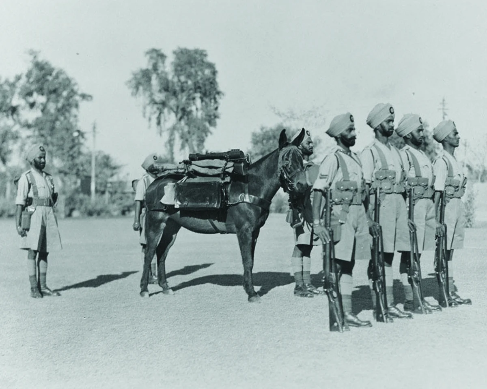
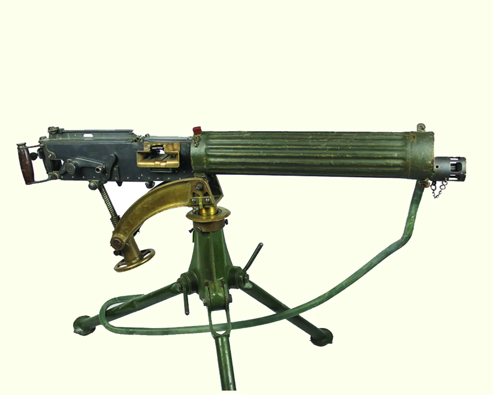
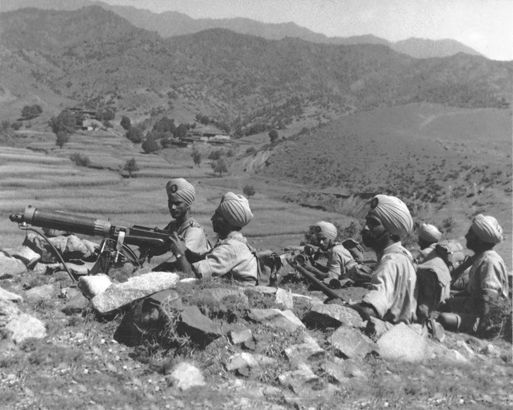
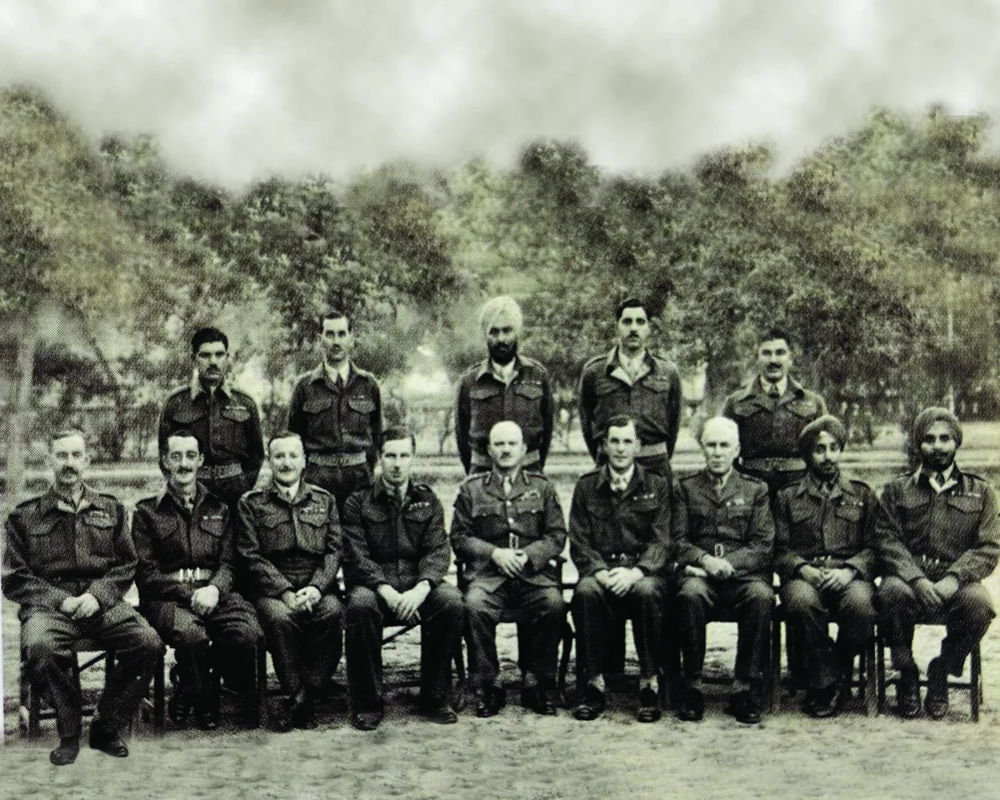
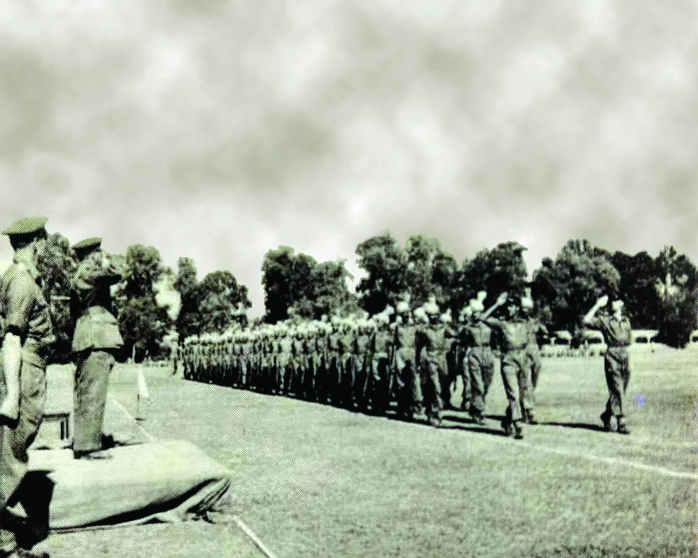
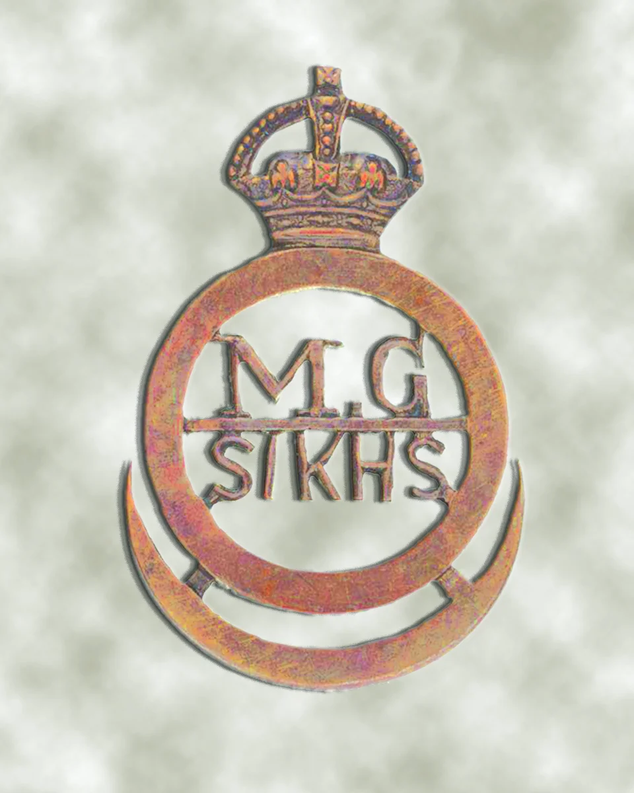

ਪਹਿਲੇ ਵਿਸ਼ਵ ਯੁੱਧ ਤੋਂ ਬਾਅਦ ਫੌਜ ਦੇ ਪੁਨਰਗਠਨ ਦੇ ਦੌਰਾਨ, ਇੱਕ ਬਟਾਲੀਅਨ ਦੀ ਫਾਇਰ ਪਾਵਰ ਨੂੰ ਵਧਾਉਣ ਦੀ ਜ਼ਰੂਰਤ ਮਹਿਸੂਸ ਕੀਤੀ ਗਈ ਸੀ। ਇਸ ਲਈ, ਹਰੇਕ ਯੂਨਿਟ ਦੀ ਡੈਲਟਾ ਕੰਪਨੀ ਨੂੰ ਇੱਕ ਮਸ਼ੀਨ ਗਨ (ਐਮਜੀ) ਕੰਪਨੀ ਵਿੱਚ ਬਦਲ ਦਿੱਤਾ ਗਿਆ ਸੀ ਜਿਸ ਵਿੱਚ 87 ਆਦਮੀਆਂ ਦੁਆਰਾ ਚਲਾਏ ਗਏ ਛੇ ਮਸ਼ੀਨ ਗਨ ਸਨ ਜੋ ਸਿੱਖ ਅਤੇ ਪੰਜਾਬੀ ਮੁਸਲਮਾਨਾਂ ਦਾ ਮਿਸ਼ਰਣ ਸਨ। ਬੰਦੂਕ ਇੱਕ ਪੁਆਇੰਟ ਸੀ .303 ਇੰਚ ਵਿਕਰਸ ਐਮਕੇ ਆਈ ਅਤੇ ਆਦਮੀ .303 ਇੰਚ ਸ਼ਾਰਟ ਮੈਗਜ਼ੀਨ ਲੀ-ਐਨਫੀਲਡ ਰਾਈਫਲਜ਼ ਨਾਲ ਲੈਸ ਸਨ।
ਬਾਅਦ ਵਿੱਚ, 1941 ਦੇ ਅੰਤ ਵਿੱਚ, ਜਨਰਲ ਹੈੱਡਕੁਆਰਟਰ ਇੰਡੀਆ ਨੇ ਹਰੇਕ ਪੈਦਲ ਸਮੂਹ ਲਈ ਇੱਕ ਐਮਜੀ ਬਟਾਲੀਅਨ ਬਣਾਉਣ ਦਾ ਫੈਸਲਾ ਕੀਤਾ। ਸਿੱਖ ਰੈਜੀਮੈਂਟ ਦੀ ਐਮਜੀ ਬਟਾਲੀਅਨ, 11 ਸਿੱਖ ਰੈਜੀਮੈਂਟ ਦੀ ਸਥਾਪਨਾ 15 ਜਨਵਰੀ 1942 ਨੂੰ ਲੈਫਟੀਨੈਂਟ ਕਰਨਲ ਜੇਸੀਬੀ ਚਰਚ ਦੁਆਰਾ ਕੀਤੀ ਗਈ ਸੀ ਜਿਸ ਨੂੰ ਵਿਕਰਸ ਮਸ਼ੀਨ ਗਨ 'ਤੇ ਯੁੱਧ ਤੋਂ ਪਹਿਲਾਂ ਦਾ ਤਜਰਬਾ ਸੀ। ਦਾ ਨਿਊਕਲੀਅਸ ਇਸ ਨਵੇਂ ਉਭਾਰ ਵਿੱਚ ਰੈਜੀਮੈਂਟ ਦੀਆਂ ਵੱਖ-ਵੱਖ ਬਟਾਲੀਅਨਾਂ ਦੀਆਂ ਐਮਜੀ ਕੰਪਨੀਆਂ ਤੋਂ ਪ੍ਰਾਪਤ ਮੈਨਪਾਵਰ ਸ਼ਾਮਲ ਸਨ।
ਬਟਾਲੀਅਨ ਵਿੱਚ ਚਾਰ ਐਮਜੀ ਕੰਪਨੀਆਂ ਸਨ, ਹਰ ਇੱਕ ਵਿੱਚ 200 ਸਾਰੇ ਰੈਂਕ ਸ਼ਾਮਲ ਸਨ। ਅਲਫ਼ਾ ਅਤੇ ਬ੍ਰਾਵੋ ਕੰਪਨੀਆਂ ਸਨ ਸਿੱਖ, ਜਦਕਿ ਚਾਰਲੀ ਅਤੇ ਡੈਲਟਾ ਕੰਪਨੀਆਂ ਵਿੱਚ ਪੰਜਾਬੀ ਮੁਸਲਮਾਨ ਸ਼ਾਮਲ ਸਨ। ਬਟਾਲੀਅਨ ਲੈਸ ਸੀ 48 ਐਮ.ਜੀ., 102 ਪਹੀਏ ਵਾਲੇ ਅਤੇ ਅੱਠ ਟਰੈਕਡ ਵਾਹਨਾਂ ਦੇ ਨਾਲ।
ਵਧਾਉਣ ਤੋਂ ਬਾਅਦ, ਬਟਾਲੀਅਨ ਨੇ 1943 ਵਿੱਚ ਛਿੰਦਵਾੜਾ ਵਿਖੇ ਜੰਗਲ ਯੁੱਧ ਦੀ ਸਿਖਲਾਈ ਲਈ ਅਤੇ ਫਿਰ ਰਾਂਚੀ ਚਲੀ ਗਈ ਜਿੱਥੇ ਇਹ ਮੀਡੀਅਮ ਮਸ਼ੀਨ ਗਨ (ਐਮਐਮਜੀ) ਨਾਲ ਲੈਸ ਸੀ। ਬਟਾਲੀਅਨ ਜੁਲਾਈ 1944 ਵਿਚ ਨਾਸਿਕ ਵਿਖੇ 19 ਇਨਫੈਂਟਰੀ ਡਿਵੀਜ਼ਨ ਵਿਚ ਸ਼ਾਮਲ ਹੋਈ। ਇਹ 01 ਨਵੰਬਰ 1944 ਨੂੰ ਇੰਫਾਲ ਚਲੀ ਗਈ ਅਤੇ ਸਹਿਯੋਗੀ ਸੈਨਾ ਵਿਚ ਸੇਵਾ ਕੀਤੀ। ਬਰਮਾ ਵਿੱਚ ਜਾਪਾਨੀਆਂ ਵਿਰੁੱਧ ਮੁਹਿੰਮ ਓਪਰੇਸ਼ਨਾਂ ਦੌਰਾਨ, ਐਮਜੀ ਬਟਾਲੀਅਨ ਨੂੰ 64 ਅਤੇ 98 ਭਾਰਤੀ ਇਨਫੈਂਟਰੀ ਬ੍ਰਿਗੇਡਾਂ ਨਾਲ ਵੰਡਿਆ ਗਿਆ ਸੀ।
ਬਟਾਲੀਅਨ ਨੇ 16 ਦਸੰਬਰ 1944 ਨੂੰ ਚਿੰਦਵਿਨ ਨਦੀ ਨੂੰ ਪਾਰ ਕੀਤਾ। ਬਟਾਲੀਅਨ ਹੈੱਡਕੁਆਰਟਰ ਅਤੇ ਦੋ ਪੰਜਾਬੀ-ਮੁਸਲਮਾਨ ਕੰਪਨੀਆਂ 11 ਜਨਵਰੀ ਤੋਂ 02 ਫਰਵਰੀ 1945 ਤੱਕ ਇਰਾਵਦੀ ਨਦੀ 'ਤੇ ਕਬਵੇਟ ਦੀ ਲੜਾਈ ਵਿੱਚ ਸ਼ਾਮਲ ਸਨ। ਮਾਂਡਲੇ ਵਿਖੇ, ਬਟਾਲੀਅਨ ਦੀਆਂ 36 ਤੋਪਾਂ ਨੇ ਵੱਡੀ ਗਿਣਤੀ ਵਿੱਚ ਗੋਲੀਬਾਰੀ ਕੀਤੀ। ਮੀਕਟੀਲਾ, ਥਾਜ਼ੀ, ਅਤੇ ਮਾਵਚੀ ਰੋਡ ਦੇ ਨਾਲ ਵੰਡ। ਅਪ੍ਰੈਲ 1946 ਵਿਚ ਬਟਾਲੀਅਨ ਕਲਕੱਤੇ ਲਈ ਰਵਾਨਾ ਹੋਈ ਅਤੇ ਨੌਸ਼ਹਿਰਾ ਵਿਚ ਤਬਦੀਲ ਹੋ ਗਈ। 10 ਨਵੰਬਰ 1946 ਨੂੰ, ਬਟਾਲੀਅਨ ਨੂੰ ਆਪਣੀ ਯੋਗਤਾ ਅਤੇ ਸਰਵਉੱਚ ਕ੍ਰਮ ਦੀ ਸ਼ਰਧਾ ਨੂੰ ਸਾਬਤ ਕਰਨ ਤੋਂ ਬਾਅਦ ਭੰਗ ਕਰ ਦਿੱਤਾ ਗਿਆ ਸੀ।
ਆਪਣੇ ਫ਼ੋਨ 'ਤੇ ਅੰਗਰੇਜ਼ੀ, ਹਿੰਦੀ ਜਾਂ ਪੰਜਾਬੀ ਵਿੱਚ ਦੇਖਣ ਲਈ ਇਸ QR ਕੋਡ ਨੂੰ ਸਕੈਨ ਕਰੋ।